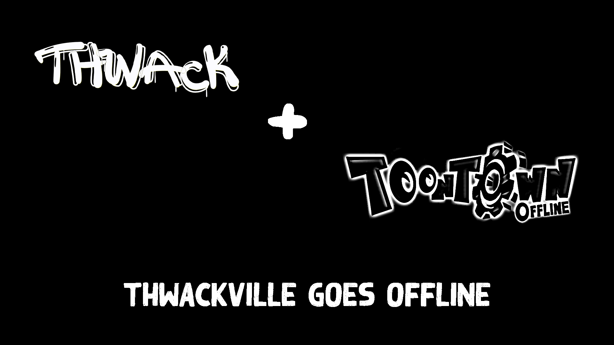

<------WELCOME TO THE THWACKVILLE TOONTOWN OFFLINE GUIDE----->
There are several steps you should ensure for your security:
1.) Make a randomly generated username, write it down and don't share with anyone else.
2.) This is a mini-server with very minimal rules, ensure you won't get easily upset as we cannot guanrantee the actions presented by online gameplay.
3.) In no way is this mini-server associated with Toontown Offline, only powered by it's engine with all proper credibility to their team.
4.) Now that you've read the above, download the Toontown Offline launcher for your respective operating system (Windows, Mac, Linux) Click here for download.
5.) Follow the steps within the installer, once installed, run the Launcher executable.
6.) In the login box, under "Connection Method:" click the option for "Mini Server".
7.) Enter the domain [ ttoff.thwackville.com ] inside the dialogue box.
8.) Once you have generated and safely stored your username, click "Play"!